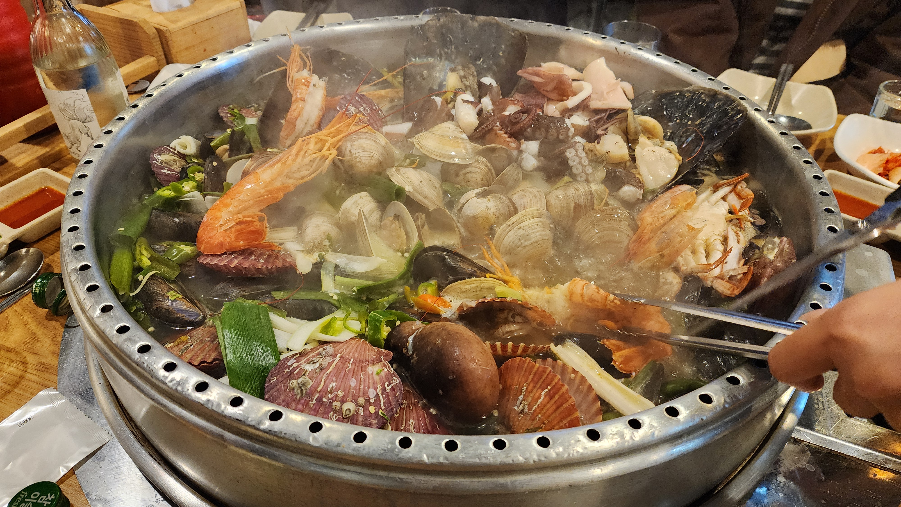
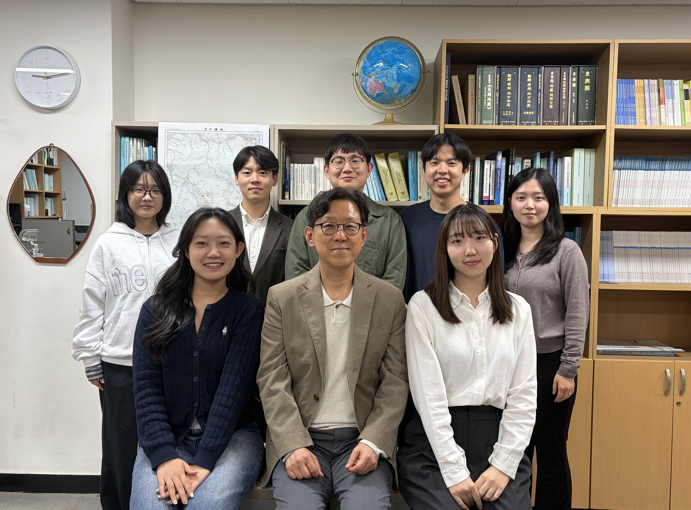
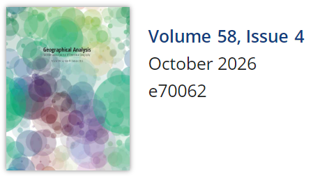

SNU | SDS LAB
TEAM
PROJECTS
PUBLICATIONS
NEWS
News
Check out the latest news and major updates from our lab!

The 2026 Winter Season Begins at Sook’s Clam Hot Pot!🦪
Celebrating the End of Midterms with Good Food and Great Company
Our 2026 winter season at
“Sook’s Clam Hot Pot”
has officially begun!!
Oct 22, 2026
GIS Lab

A New Group Photo with Our Updated Lab Team! 📸
Capturing a New Moment Together
We took a new group photo with our updated lab members!
Oct 15, 2026
GIS Lab

New Publication in Geographical Analysis: Introducing ML-SAS
Woohyung Kim and Professor Sang-Il Lee introduce a machine-learning-based approach to spatial autocorrelation analysis.
We are pleased to announce that
Woohyung Kim
and
Professor Sang-Il Lee
have published a paper in the international journal
Geographical Analysis
!
Oct 9, 2026
GIS Lab
Welcoming Our New Undergraduate Research Intern
GIS Lab Welcomes Our Undergraduate Intern Yangseon Kim
We are pleased to welcome a new undergraduate research intern who will be joining the SDS Lab for the semester.
Sep 28, 2026
GIS Lab
SDS Lab Website Completed
Quarto-based Homepage Launch
The updated website now presents a complete overview of our research in Spatial Data Science, GeoAI, GIS, and Geospatial Analytics, including detailed project descriptions…
Feb 28, 2026
GIS Lab
The 2025 Korean Geography Conference
Hyemin presented her Master’s Thesis at Conference!
At the 2025 Korean Geography Conference held on June 27–28, our lab’s master’s degree candidate, Hyemin, presented her thesis titled “Regionalization of the Seoul…
Jun 28, 2025
GIS Lab
GIS Lab Website Opened!
New Quarto-based Homepage Launch
Hello! The SNU GIS Lab website has been newly launched.
Jun 27, 2025
GIS Lab
No matching items
TOP